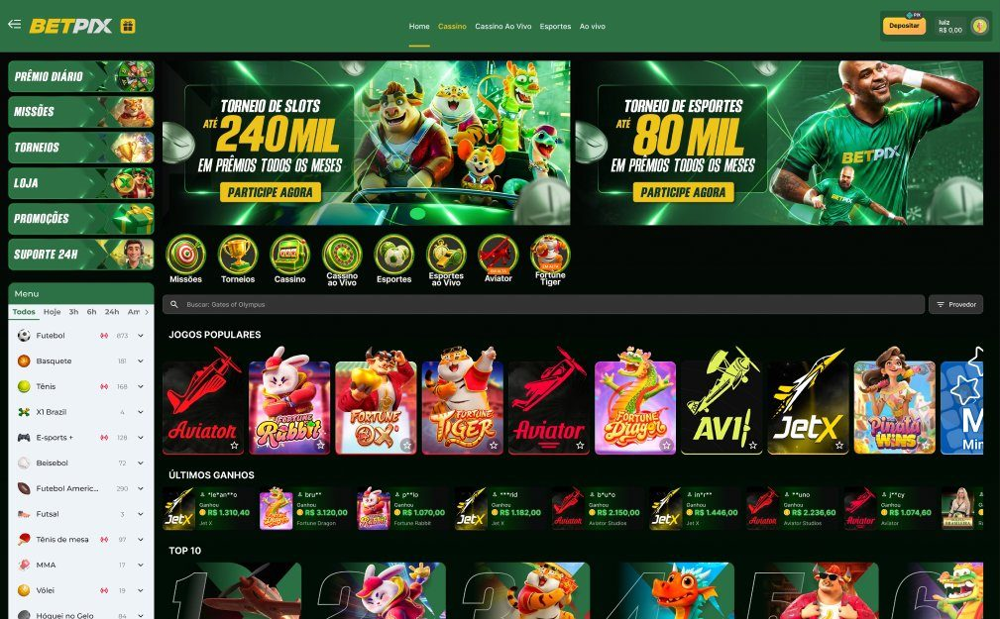
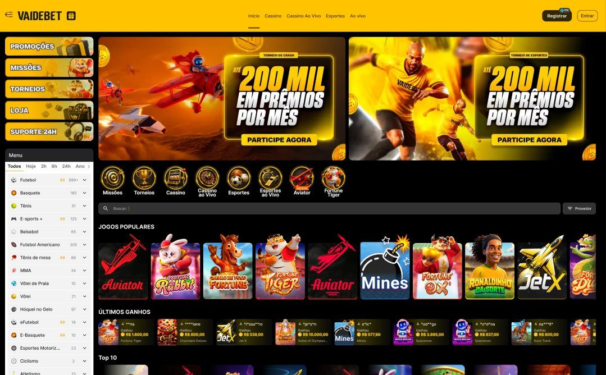
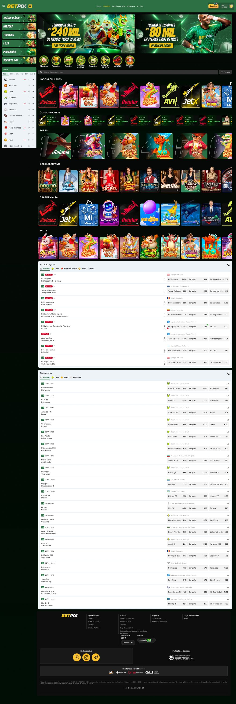
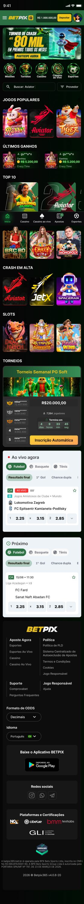
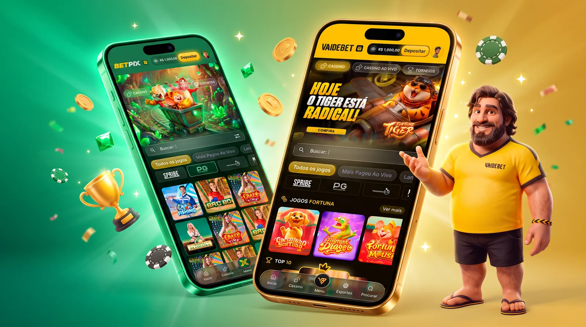
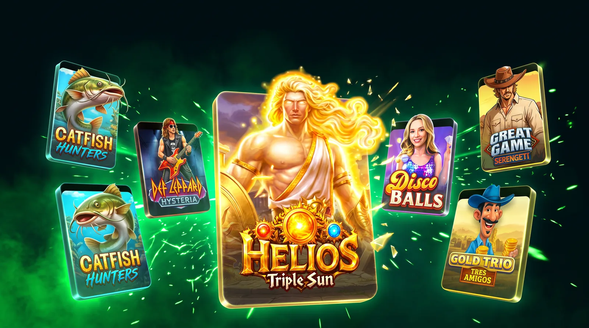
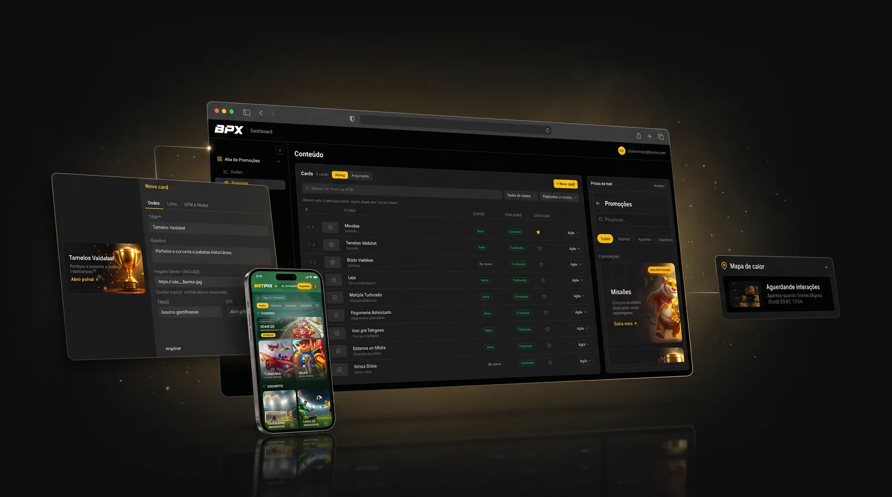

O produto
A BPX Group é um grupo de Campina Grande (PB), fundado em 2023, que opera casas de apostas esportivas e cassinos online e tem times próprios de marketing e atendimento. As marcas do grupo são Vaidebet, Betpix, Betpix365 e Obabet.
Cada marca tem sua identidade, mas todas rodam sobre o mesmo produto: home, cassino, cassino ao vivo, esportes, promoções, carteira e perfil. Meu trabalho é desenhar esse produto uma vez e fazer ele servir para todas. O design system troca cor, tipografia e peças de campanha, e a estrutura das telas fica igual.
O desafio
A home de uma casa de apostas junta muita coisa: jogos populares, torneios, ganhos recentes, esportes ao vivo e banners de campanha. O difícil é caber tudo sem virar poluição e repetir isso em quatro marcas sem desenhar quatro vezes.
Uma estrutura, duas marcas
Mesma grade, mesmos componentes, mesma hierarquia. Só o tema muda.


Home completa
Role dentro do quadro para ver a página inteira.


Jornada do usuário
Além da home, desenhei as telas das jornadas críticas — do depósito ao jogo de slot e ao sportsbook — otimizando cada passo para reduzir atrito e levar o usuário do cadastro à aposta com o menor número de toques.

Automação com IA
Duas frentes onde tirei o trabalho operacional do caminho do time usando IA — para sobrar tempo de criar, pensar estratégia e experimentar.
Case 1 · Capas de jogos
De 904 capas em 6 meses para +3.000 em uma semana
A operação de atualizar mais de 3.500 thumbnails de slots e cassino ao vivo era interminável: 3 designers produzindo as capas e 1 assistente subindo cada jogo no backoffice ao menos 3 vezes, nos formatos exigidos. O resultado real: 904 capas em 6 meses.
Me juntei ao Claude e desenhei uma automação que cria cerca de 1.000 thumbnails por dia e publica direto no backoffice. O pipeline:
- Varre o catálogo e identifica as capas fora do padrão;
- Busca as referências no site dos provedores;
- Usa IA generativa para extrair as 3 camadas essenciais de cada composição;
- Monta e organiza as capas no Figma, por estúdio;
- Publica tudo no backoffice.
Ferramentas: Figma, Claude Code e Magnific (Freepik) para gerar as imagens.

Case 2 · Hub de Promoções
Dados puros para o CRM trabalhar
Concebi a página de Promoções e, por trás dela, um hub de gerenciamento que deu autonomia ao time: gerencia os cards e as campanhas com agendamento, mede o tráfego, gera mapa de calor de interação e registra as buscas de pesquisa dos usuários. Publicar deixou de depender de código — e o CRM passou a decidir com dado, não achismo.

Onde está hoje
Betpix e Vaidebet já rodam sobre a mesma estrutura de telas. Ainda não tenho métricas para publicar aqui.